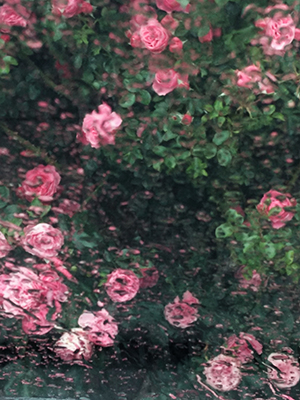

Julieta Caputo (Buenos Aires, 1993) es artista, diseñadora de imagen y sonido egresada de la Universidad de Buenos Aires y gestora cultural. Trabaja en proyectos de video ensayo e instalaciones audiovisuales que indagan sobre la intimidad, los feminismos y el espectro político de las imágenes.
mjulietacaputo@gmail.com
instagram
CV
AV portfolio
+1 213 524 6973
Julieta Caputo (Buenos Aires, 1993) is an artist, audiovisual designer (University of Buenos Aires), and cultural strategist. She works on video essays and audiovisual installations that explore intimacy, feminism, and the political spectrum of images.
She has exhibited at Centro Cultural San Martín (Buenos Aires), Centro Cultural Recoleta (Buenos Aires), Festival Internacional de Videoarte (FIVA), Festival Internacional de Cine de Mar del Plata, Proyector Festival de Videoarte (Madrid), Festival Audiovisual de Bariloche, Galería Soler (Buenos Aires), Tambo Colectivo Ch’ixi (La Paz), among others. She was awarded with a Jury Mention at the 106th National Salon of Visual Arts (2017) and with the Best Video Installation Award at the 3rd National Biennial of Design UBA (2017). She received grants from the National Fund of the Arts and the National Institute of Performing Arts and was selected to participate in the art residencies: Barda Confluencias (2020), Manta (2018), and FASE, Art, science and technology (2017). After completing her studies in audiovisual design, she attended the graduate course Technopoetics/Technopolitics in Latin America directed by Claudia Kozak (FLACSO, 2020), took the seminar Sociology of the image dictated by sociologist Silvia Rivera Cusicanqui (La Paz, Bolivia, 2018), and got a Diploma in Cultural Management from University of Buenos Aires (2017). Currently, she is based in Los Angeles where she offers audiovisual services for exhibition design at different museums and galleries.mjulietacaputo@gmail.com
instagram
CV
AV portfolio
+1 213 524 6973